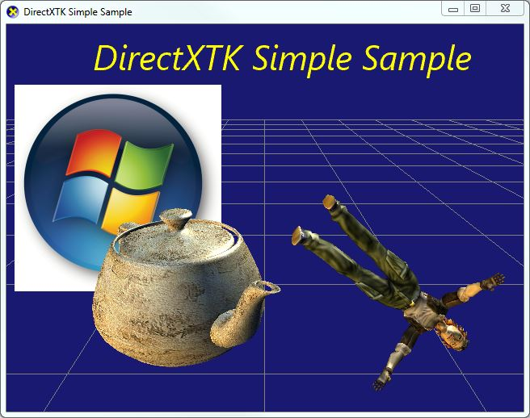

The latest version of this sample is hosted on GitHub.
The DirectX Tool Kit is a collection of helper classes for writing Direct3D 11 C++ code for Windows Store apps, Windows 8.x Win32 desktop applications, Windows Phone 8 applications, Windows 7 applications, and Windows Vista Direct3D 11.0 applications.
This sample provides a simple demonstration of using the DirectXTK library in a Win32 desktop application. This is based on the simple rendering loop setup in the Direct3D Tutorial Win32 sample.
For the latest version of DirectXTK, more detailed documentation, discussion forums, bug reports and feature requests, please visit the Codeplex site.
http://go.microsoft.com/fwlink/?LinkId=248929
This is the Win32 desktop version of this sample that will run on Windows 8.x, Windows 7, or Windows Vista SP2+KB971644. There is a Win32 desktop version that uses DXUT, a Windows Store app version of this sample that requires VS 2012 installed on a Windows 8 machine to build and run, a Windows Store app for Windows 8.1 version of this sample, and one for Windows phone 8.
The SimpleSample demo shows how to link to the DirectXTK library and demonstrates the use of several DirectXTK components:
.SDKMESH file "Tiny.SDKMESH"
Note: Because of the different versions of XAudio2 for Win32 desktop apps, this sample does not demonstrate DirectXTK for Audio. See the DirectXTK for Audio Simple Win32 Sample for Windows 8 or down-level version that uses the legacy DirectX SDK.

This sample makes use of the left-handed coordinate system commonly assumed by DirectX Win32 desktop applications.
.SDKMESH files are exported assuming standard backface winding for left-handed coordinates. If wanting to make use of right-handed coordinates (as used by XNA Game Studio) for using
.CMO models instead, change the following source code in SimpleSample.cpp:
XMMatrixLookAtLH -> XMMatrixLookAtRH XMMatrixPerspectiveFovLH -> XMMatrixPerspectiveFovRH
CreateTeapot from false to true CreateFromSDKMESH from true to false -or- replace it with
CreateFromCMO and use a different model file. It is possible to modify this project to build with Visual Studio 2010 using the Windows 8.0 SDK. Set the Platform Toolset to "v100" for all configurations, and obtain the latest DirectXTK package. Remove the "DirectXTK_Desktop_2012.vcxproj" reference, add the project "DirectXTK_Desktop_2010.vcxproj". and add a new Reference to this project. You will also need to apply the changes to the main project described on the Visual Studio team blog.
This sample can be modified to build with the Visual Studio 2013 using the Windows 8.1 SDK. Set the Platform Toolset to "v120" for all configurations, and obtain the latest DirectXTK package. Remove the "DirectXTK_Desktop_2012.vcxproj" reference, add the project "DirectXTK_Desktop_2013.vcxproj", and add a new Reference to this project.
You can also allow VS 2013 to upgrade the projects in place.
January 25, 2013 - Initial release
July 1, 2013 - Updated for July 2013 release of DirectXTK
October 28, 2013 - Updated for October 2013 release of DirectXTK
February 28, 2014 - Update for the February 2014 release of DirectXTK
July 24, 2014 - Update for the July 2014 release of DirectXTK
November 24, 2014 - Update for the November 2014 release of DirectXTK
Where is the DirectX SDK (2013 Edition)?